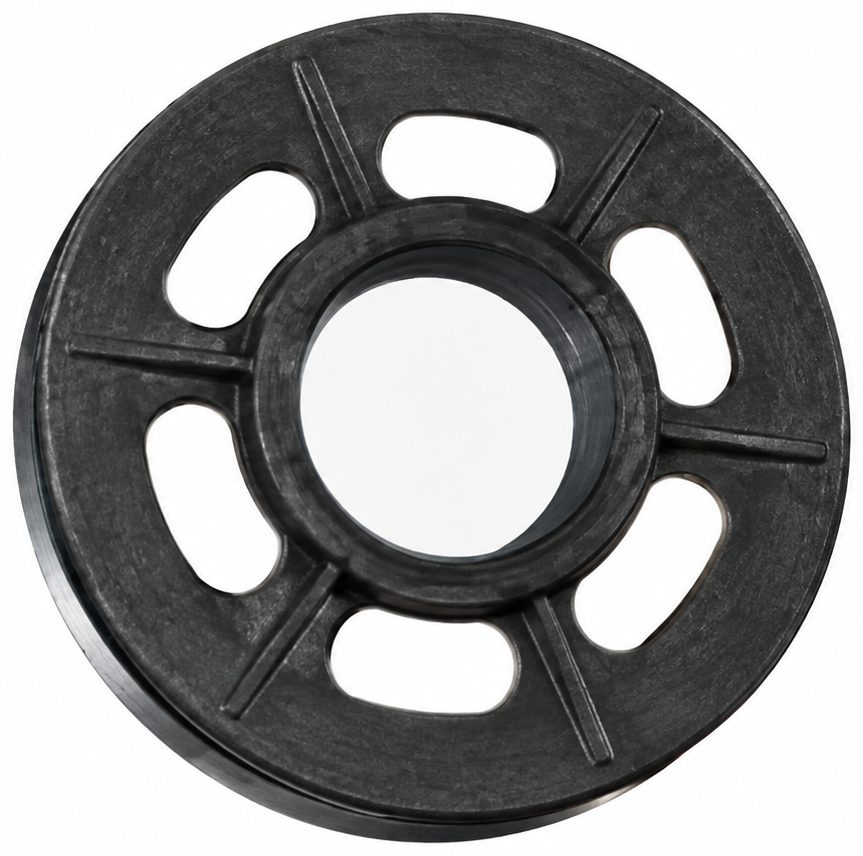
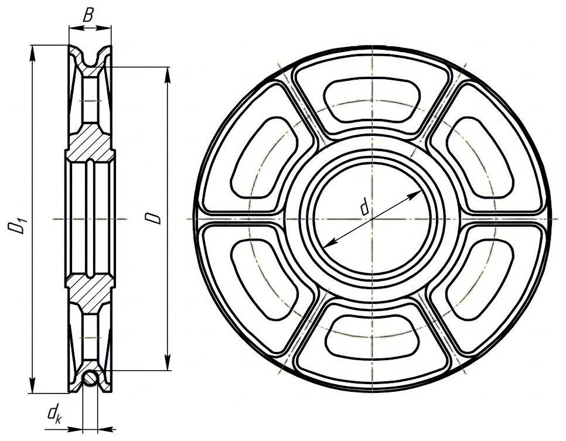
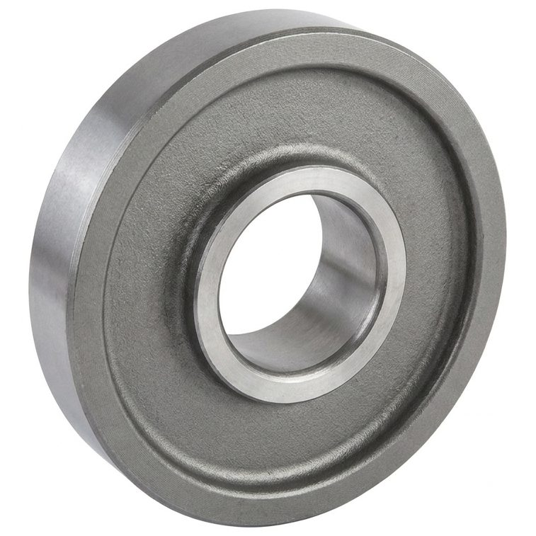
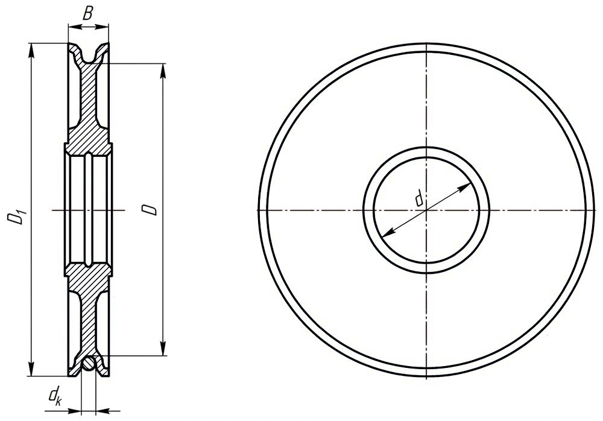
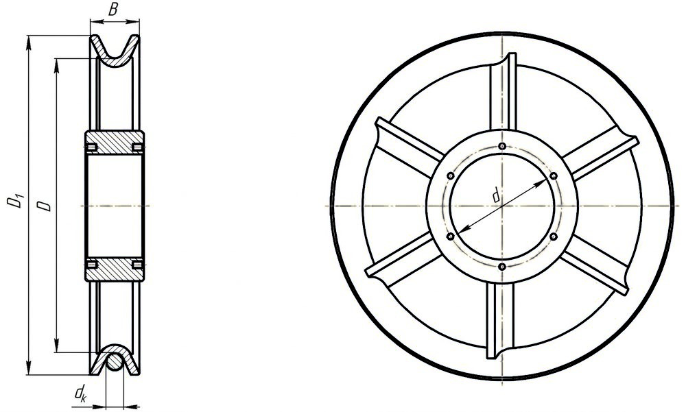

Позвонить: (4842) 75-75-05
Написать сообщение: m-40@inbox.ru
Блоки полиспаста → Блоки канатные

Блок полиспаста является деталью кранов и других грузоподъемных машин. Конструкция представляет
собой колесо с желобом по окружности, предназначенным для цепи или каната, по внутренней части ступицы выполнены посадочные места для подшипников.
Ступица блока имеет внутреннюю канавку для пружинного кольца для определения осевого положения подшипников и подачи к ним смазочного материала,
а на торцовых поверхностях - прямоугольные канавки для уплотнений или резьбовые отверстия для крепления крышек, а также отверстия для смазывания.
Точность обработки поверхности ручья соответствует одиннадцатому квалитету при шероховатости Rz=20 мкм. Профиль ручья выполнен трапецеидальным с глубиной ручья
150...200%, раствором 200...230%, радиусом дна ручья 60...70% от диаметра каната и углом раствора 40..60°.
Канатные блоки обрабатывают на токарных или токарно-карусельных станках за два установа. На токарно-карусельном станке при обработке блоков одновременно
используют боковые и верхние суппорты, оснащенные режущим инструментом, соответствующим выполняемому переходу.
Длительность работы каната в значительной степени зависит от диаметра огибаемых им блоков. Чем меньше этот диаметр, тем быстрее канат изнашивается. При очень малом
диаметре блока или барабана может произойти деформация каната. Учитывая это, не разрешается изготавливать блоки, диаметр которых меньше определенного по формуле:
D ≥ d·e
D - диаметр блока, измеряемый по средней линии огибающего блок каната, мм;
dк - диаметр каната, мм;
е - коэффициент, зависящий от типа крана и режима его работы.
Значение коэффициента е принимается для кранов всех типов, за исключением стреловых, 20 - при легком режиме работы; 25 - при среднем; 30 - тяжелом и 35 - при
весьма тяжелом.
Для стреловых самоходных и прицепных кранов и электрических талей с учетом компактности механизмов значение коэффициента е принимается несколько меньше,
чем для кранов мостового типа, башенных и портальных.
Во всех случаях для уравнительных блоков сдвоенных полиспастов, их диаметр может быть принят на 20%, а у стреловых кранов - на 40% меньше,
определяемого по формуле. Это объясняется тем, что уравнительный блок не является рабочим и вводится в систему сдвоенного полиспаста для выравнивания неодинакового
удлинения правой и левой ветвей каната.
Диаметр блока, огибаемого сварной цепью, у грузоподъемных машин с ручным приводом должен быть не менее 20-кратного калибра (диаметра прутка, из которого сделано звено цепи),
а при машинном приводе - не менее 30-кратного калибра цепи. При увеличении диаметров блоков напряжения в звене цепи от изгиба уменьшаются, и цепь работает в
более благоприятных условиях.
Блоки изготовляют диаметром от 80 до 2000 мм в зависимости от диаметров канатов при соотношении диаметра каната и блока в среднем 1 : 20.
Заготовками для канатных блоков являются в большинстве случаев отливки, и только блоки малых диаметров изготавливают из штампованых заготовок (при крупносерийном
производстве).
Методом литья из серого чугуна СЧ 12, СЧ 18, СЧ 28 ГОСТ 1412-85 изготовливают заготовки блоков для кранов, работающих в легком режиме, или из стали 25Л или 35Л ГОСТ 1050-74
для кранов, работающих в тяжелом режиме (Рисунок 1), а также из стали СтЗсп ГОСТ 380-71 штампованными (Рисунок 2) или сварными (Рисунок 3) с гнутыми ручьями.
Блоки небольших размеров (блочки) также могут изготовливаться литьем в кокиль. Более крупные блоки изготавливают литьем в песчаные формы при их горизонтальном расположении.
Отливки должны соответствовать III классу точности ГОСТ 1855-55.
dк - диаметр каната, мм;
е - коэффициент, зависящий от типа крана и режима его работы.
Значение коэффициента е принимается для кранов всех типов, за исключением стреловых, 20 - при легком режиме работы; 25 - при среднем; 30 - тяжелом и 35 - при весьма тяжелом.
Для стреловых самоходных и прицепных кранов и электрических талей с учетом компактности механизмов значение коэффициента е принимается несколько меньше, чем для кранов мостового типа, башенных и портальных.
Во всех случаях для уравнительных блоков сдвоенных полиспастов, их диаметр может быть принят на 20%, а у стреловых кранов - на 40% меньше, определяемого по формуле. Это объясняется тем, что уравнительный блок не является рабочим и вводится в систему сдвоенного полиспаста для выравнивания неодинакового удлинения правой и левой ветвей каната.
Диаметр блока, огибаемого сварной цепью, у грузоподъемных машин с ручным приводом должен быть не менее 20-кратного калибра (диаметра прутка, из которого сделано звено цепи), а при машинном приводе - не менее 30-кратного калибра цепи. При увеличении диаметров блоков напряжения в звене цепи от изгиба уменьшаются, и цепь работает в более благоприятных условиях.
Блоки изготовляют диаметром от 80 до 2000 мм в зависимости от диаметров канатов при соотношении диаметра каната и блока в среднем 1 : 20.
Заготовками для канатных блоков являются в большинстве случаев отливки, и только блоки малых диаметров изготавливают из штампованых заготовок (при крупносерийном производстве).
Методом литья из серого чугуна СЧ 12, СЧ 18, СЧ 28 ГОСТ 1412-85 изготовливают заготовки блоков для кранов, работающих в легком режиме, или из стали 25Л или 35Л ГОСТ 1050-74 для кранов, работающих в тяжелом режиме (Рисунок 1), а также из стали СтЗсп ГОСТ 380-71 штампованными (Рисунок 2) или сварными (Рисунок 3) с гнутыми ручьями.
Блоки небольших размеров (блочки) также могут изготовливаться литьем в кокиль. Более крупные блоки изготавливают литьем в песчаные формы при их горизонтальном расположении. Отливки должны соответствовать III классу точности ГОСТ 1855-55.
|
 |
 |
||||
| Рисунок 1. Внешний вид и чертеж крановых блоков изготовленных из литой заготовки | |||||
Блоки крановые делятся на:
- Направляющие;
- Поддерживающие;
- Приводные.
Поддерживающие блоки предназначаются для ограничения провеса каната, имеют малый угол обхвата и наименьший диаметр – до 8-10 диаметров каната.
Приводные блоки передают окружное усилие за счет сцепления каната с ободом блока. В приводных крановых блоках строго выдерживается радиус канавки в пределах 0,52-0,53 диаметров каната. Диаметр приводных блоков следует брать по возможности большим, порядка 40-60 диаметров каната, что уменьшает давление и истирание обода от упругого скольжения каната.
|
 |
 |
||||
| Рисунок 2. Внешний вид и чертеж крановых блоков изготовленных из штампованной заготовки | |||||
Различают подвижные и неподвижные канатные блоки. Ось вращения неподвижного блока закреплена на опоре. Такой блок служит для изменения направления движения цепи или каната. Подвижный блок применяется в полиспастах крюковых подвесок для увеличения показателей силы и скорости.
Норма выбраковки для блоков полиспаста
Блоки не допускаются в эксплуатацию при наличии трещин в ребордах или спицах, а также откола на ребордах или отпечатка каната на ручье.
При уменьшении толщины стенки ручьев на 15..20% первоначальной толщины, износе поверхности ручья по оси блока на величину свыше 25% диаметра каната,
трещинах на ступице блоки подлежат замене.
Боковой разбег блоков головки стрелы допускается не более 2 мм.

|
 |
||||
| Рисунок 3. Внешний вид и чертеж сварных крановых блоков | |||||
Основные размеры блоков полиспаста
| Наименование | D1 | dк | D | d | B | Масса, кг |
| Блок канатный 140 | 140 | 9 … 11 | 135 | 60 | 18 | 3 |
| Блок канатный 156 | 156 | 9 … 11 | 130 | 60 | 20 | 3,8 |
| Блок канатный 160 | 160 | 9 … 11 | 135 | 60 | 20 | 4,5 |
| Блок канатный 165 | 165 | 9 … 11 | 130 | 65 | 20 | 5,3 |
| 11 … 14 | 140 | 80 | 7 | |||
| Блок канатный 170 | 170 | 9 … 11 | 145 | 80 | 22 | 7,5 |
| Блок канатный 180 | 180 | 9 … 11 | 150 | 70 | 22 | 7,9 |
| Блок канатный 195 | 195 | 9 … 11 | 155 | 75 | 25 | 8,5 |
| 11 … 14 | 165 | 75 | 11,5 | |||
| Блок канатный 200 | 200 | 11 … 14 | 170 | 60 | 26 | 12 |
| Блок канатный 210 | 210 | 11 … 14 | 175 | 80 | 26 | 13,5 |
| Блок канатный 240 | 240 | 11 … 14 | 200 | 92 | 30 | 15 |
| Блок канатный 260 | 260 | 11 … 14 | 205 | 100 | 35 | 16,5 |
| Блок канатный 265 | 265 | 11 … 14 | 225 | 100 | 35 | 25,5 |
| Блок канатный 290 | 290 | 11 … 14 | 240 | 110 | 38 | 27 |
| Блок канатный 300 | 300 | 11 … 14 | 250 | 80 | 40 | 18 |
| Блок канатный 310 | 310 | 11 … 14 | 250 | 120 | 40 | 20,5 |
| Блок канатный 315 | 315 | 9 … 11 | 265 | 125 | 42 | 10 |
| 11 ... 14 | 272 | 12 | ||||
| 14 ... 18 | 282 | 14 | ||||
| Блок канатный 320 | 320 | 9 ... 11 | 284 | 80 | 42 | 10 |
| 11 ... 14 | 276 | 15 | ||||
| 14 ... 18 | 264 | 18 | ||||
| Блок канатный 350 | 350 | 14 ... 18 | 295 | 110 | 45 | 16 |
| Блок канатный 355 | 355 | 14 ... 18 | 295 | 138 | 48 | 17,5 |
| Блок канатный 360 | 360 | 14 ... 18 | 300 | 138 | 48 | 18 |
| Блок канатный 375 | 375 | 14 ... 18 | 315 | 140 | 48 | 16 |
| Блок канатный 380 | 380 | 9 ... 11 | 344 | 100 | 50 | 12 |
| 11 ... 14 | 336 | 13 | ||||
| 14 ... 18 | 324 | 16 | ||||
| Блок канатный 400 | 400 | 14 ... 18 | 350 | 100 | 52 | 16 |
| Блок канатный 410 | 410 | 14 ... 18 | 350 | 110 | 55 | 18,5 |
| Блок канатный 420 | 420 | 14 ... 18 | 360 | 120 | 55 | 22 |
| Блок канатный 430 | 430 | 14 ... 18 | 360 | 120 | 60 | 24 |
| Блок канатный 450 | 450 | 11 ... 14 | 406 | 125 | 60 | 21 |
| 14 ... 18 | 394 | 23 | ||||
| 18 ... 23 | 378 | 26,5 | ||||
| Блок канатный 530 | 530 | 11 ... 14 | 486 | 160 | 70 | 32,5 |
| 14 ... 18 | 474 | 34 | ||||
| 18 ... 23 | 458 | 40 | ||||
| 23 ... 28,5 | 440 | 47 | ||||
| Блок канатный 545 | 545 | 14 ... 18 | 470 | 210 | 70 | 45 |
| Блок канатный 560 | 560 | 11 ... 14 | 500 | 215 | 72 | 42 |
| 14 ... 18 | 485 | 215 | 45,5 | |||
| 18 ... 23 | 475 | 215 | 49 | |||
| 23 ... 28,5 | 470 | 215 | 52 | |||
| Блок канатный 630 | 630 | 14 ... 18 | 584 | 242 | 82 | 55 |
| 14 ... 18 | 574 | 200 | 75 | 48,5 | ||
| 18 ... 23 | 558 | 52 | ||||
| 23 ... 28,5 | 540 | 58 | ||||
| Блок канатный 685 | 685 | 14 ... 18 | 610 | 210 | 90 | 66 |
| Блок канатный 720 | 720 | 14 ... 18 | 600 | 220 | 95 | 69 |
| Блок канатный 750 | 750 | 14 ... 18 | 694 | 240 | 85 | 74 |
| 18 ... 23 | 678 | 81 | ||||
| 23 ... 28,5 | 660 | 90 | ||||
| Блок канатный 800 | 800 | 23 ... 28,5 | 710 | 250 | 105 | 85 |
| Блок канатный 900 | 900 | 18 ... 23 | 810 | 260 | 95 | 97 |
| 23 ... 28,5 | 800 | 345 | 110 | |||
| Блок канатный 960 | 960 | 23 ... 28,5 | 850 | 370 | 125 | 115,5 |
| Блок канатный 1010 | 1010 | 23 ... 28,5 | 900 | 390 | 130 | 140 |
| Блок канатный 1070 | 1070 | 23 ... 28,5 | 960 | 415 | 140 | 152 |